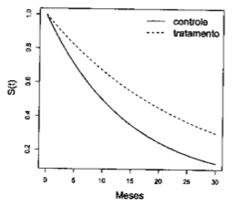
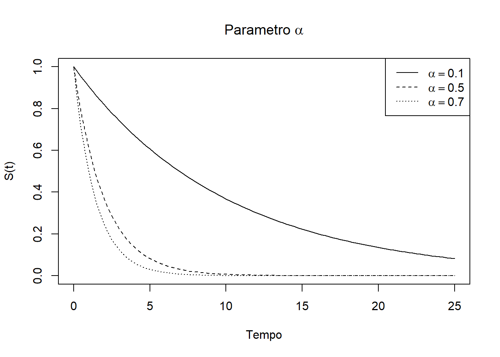
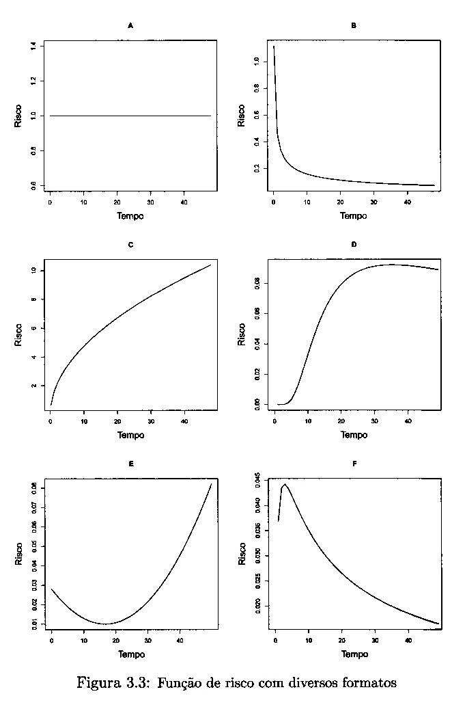
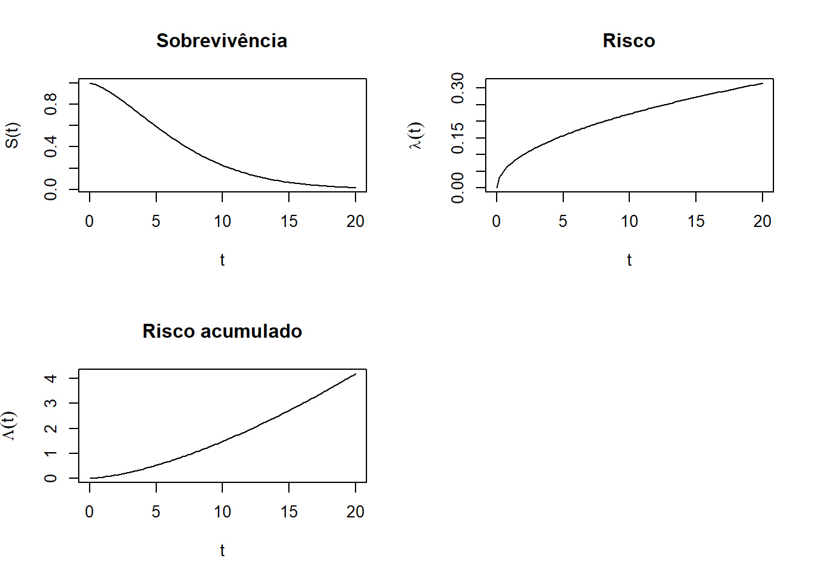
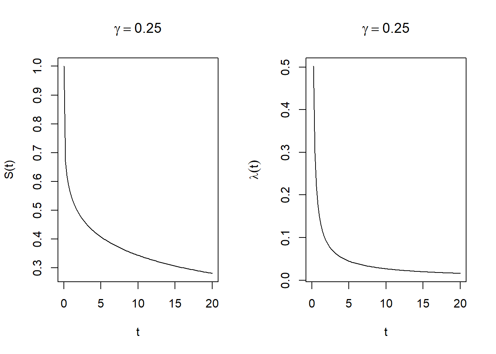
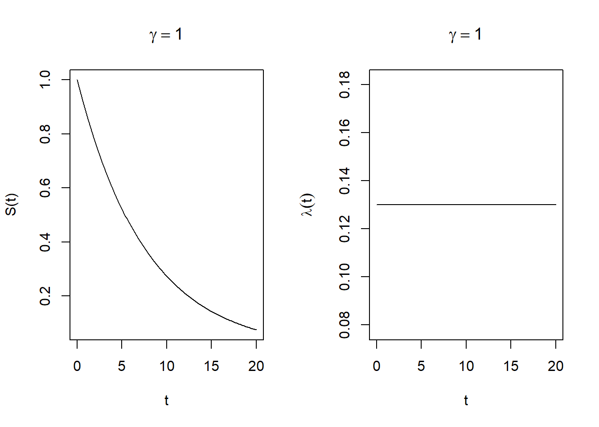
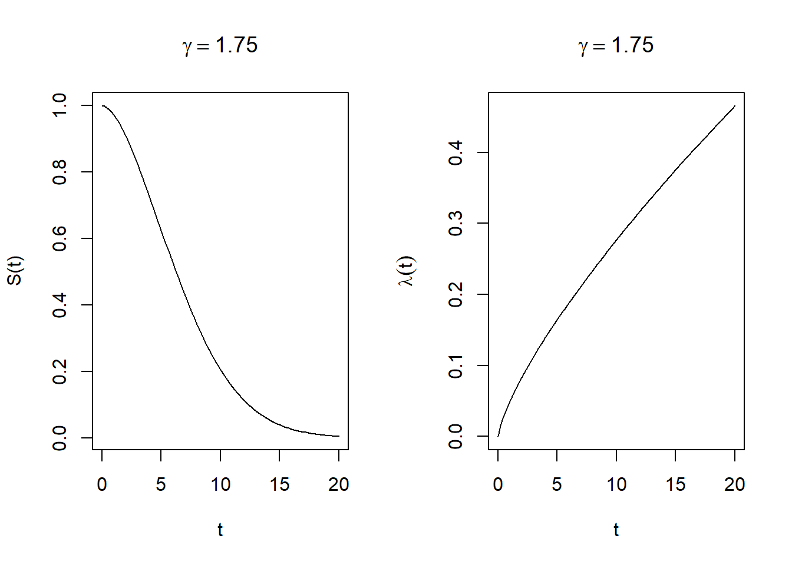
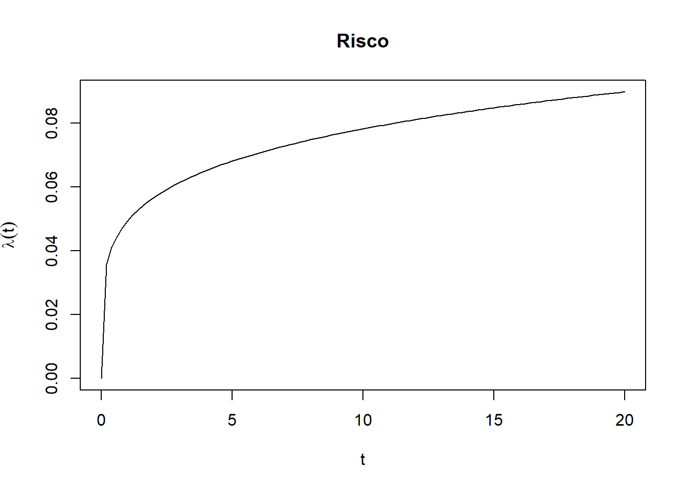
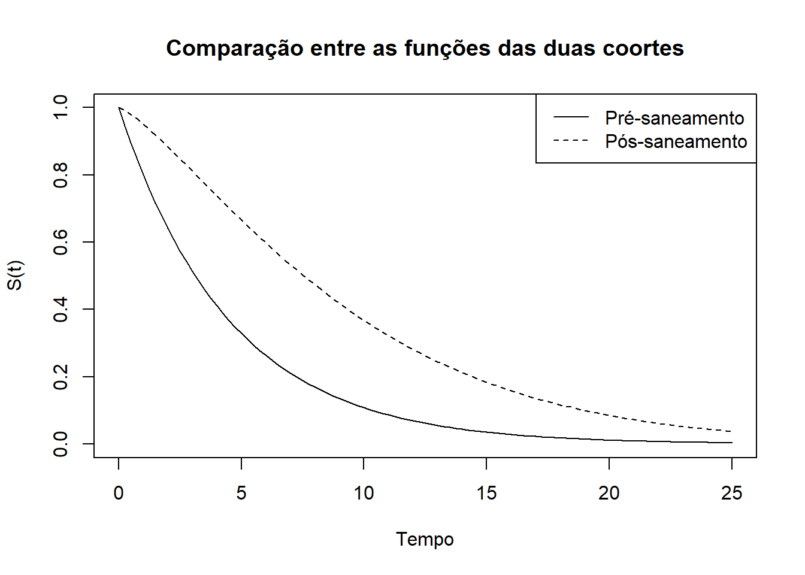
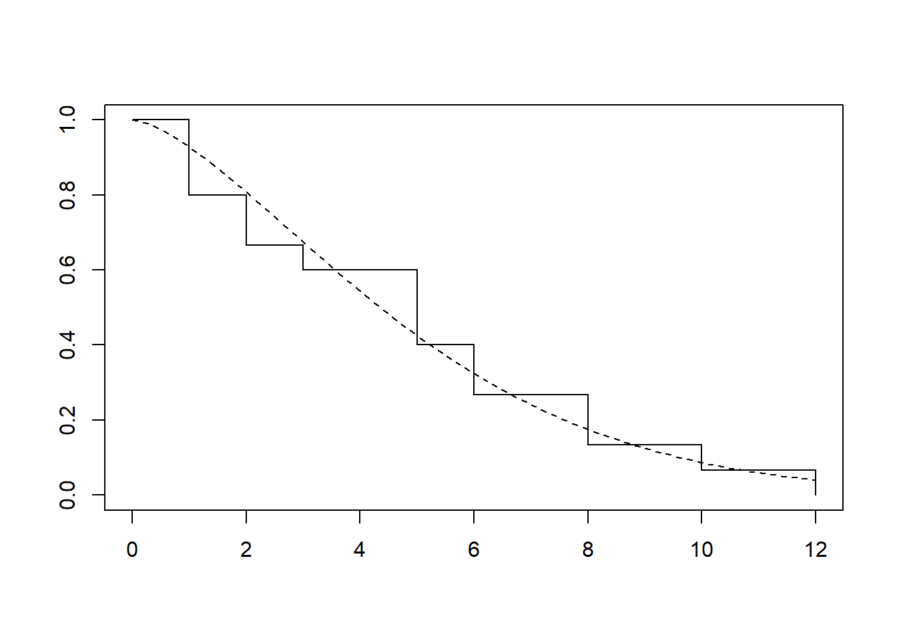

Em um estudo, ajustou-se um modelo exponencial aos tempos de sobrevivência observados (em meses) nos grupos controle e tratamento. Os modelos encontrados foram:
Com base nesses modelos, responda:

O risco instantâneo estimado pode ser obtido através da seguinte expressão:
\[\lambda(t) = f(t)/S(t)\] Sendo \(f(t) = \alpha exp(-\alpha t)\) e \(S(t) = exp(-\alpha t)\), e \(\alpha_{c} = 0,07\) e \(\alpha_{tr} = 0,04\), podemos afirmar que:
O risco instantâneo para o grupo de controle é: \[\lambda _c(t) = \frac{0,07 exp(-0,07 t)}{exp(-0,07 t)} = 0,07\] E para o grupo de tratamento é: \[\lambda _{tr}(t) = \frac{0,04 exp(-0,04 t)}{exp(-0,04 t)} = 0,04\]
A sobrevivência mediana pode ser estimada igualando \(S(t) = 0,5\), enquanto o tempo médio de sobrevivência no modelo exponencial pode ser estimado por \(\frac{1}{\alpha}\).
Ou seja, para o grupo de controle, o tempo médio de sobrevivência é dado por \[\frac{1}{\alpha_c} = \frac{1}{0,07} = 14,2857\] e o tempo mediano de sobrevivência é dado por \[0,5 = exp(-0,07t)\] \[\frac{\ln(2)}{\alpha_c} = \frac{\ln(2)}{0,07} = 9,9\]
Ou seja, para o grupo de tratamento, o tempo médio de sobrevivência é dado por \[\frac{1}{\alpha_{tr}} = \frac{1}{0,07} = 14,2857\] e o tempo mediano de sobrevivência é dado por \[0,5 = exp(-0,04t)\] \[\frac{\ln(2)}{\alpha_{tr}} = \frac{\ln(2)}{0,04} = 17,3\]
Podemos plotar as curvas de sobrevivência com os pontos relevantes para a sobrevivência mediana e média nas duas curvas:
# Curve para a plotagem de CONTROLE
alfa = 0.07
curve(exp(-alfa * x), from = 0, to = 25, ylab = "S(t)", xlab = "Tempo")
# Mediana do modelo exponencial
p50 <- log(1/0.5)/alfa
# Média do modelo exponencial
pm <- 1/alfa
# Segmentos de reta e pontos para a plotagem
# Mediana
segments(p50, 0, p50, exp(-alfa * p50), lty = 3)
segments(-1, exp(-alfa * p50), p50, exp(-alfa * p50), lty = 3)
points(p50, exp(-alfa * p50), pch = 16)
# Media
segments(pm, 0, pm, exp(-alfa * pm), lty = 3)
segments(-1, exp(-alfa * pm), pm, exp(-alfa * pm), lty = 3)
points(pm, exp(-alfa * pm), pch = 16)
# Curve para a plotagem de TRATAMENTO
alfa = 0.04
curve(exp(-alfa * x), from = 0, to = 25, ylab = "S(t)", xlab = "Tempo", add = TRUE, lty = 2)
# Mediana do modelo exponencial
p50 <- log(1/0.5)/alfa
# Média do modelo exponencial
pm <- 1/alfa
# Segmentos de reta e pontos para a plotagem
# Mediana
segments(p50, 0, p50, exp(-alfa * p50), lty = 3)
segments(-1, exp(-alfa * p50), p50, exp(-alfa * p50), lty = 3)
points(p50, exp(-alfa * p50), pch = 16)
text(p50, exp(-alfa * p50), "Mediana", adj = c(1.5, -0.25))
# Media
segments(pm, 0, pm, exp(-alfa * pm), lty = 3)
segments(-1, exp(-alfa * pm), pm, exp(-alfa * pm), lty = 3)
points(pm, exp(-alfa * pm), pch = 16)
text(pm, exp(-alfa * pm), "Média", adj = c(1.5, -0.25))
# Legendas
legend("topright", c("Controle", "Tratamento"), lty = 1:2)Tanto pela análise gráfica, quanto pela análise dos tempos, é provável que o tratamento tenha tido efeito na sobrevivência dos pacientes.
Estude no R o efeito do parâmetro \(\alpha\) no modelo paramétrico exponencial.
# Funções de sobrevivência
alfa_1 = 0.1
alfa_2 = 0.5
alfa_3 = 0.7
curve(
exp(-alfa_1 * x),
from = 0,
to = 25,
ylab = "S(t)",
xlab = "Tempo",
main = expression(paste(Parametro, " ", alpha)),
ylim = c(0, 1),
lty = 1
)
curve(
exp(-alfa_2 * x),
from = 0,
to = 25,
ylab = "S(t)",
xlab = "Tempo",
add = TRUE,
lty = 2
)
curve(
exp(-alfa_3 * x),
from = 0,
to = 25,
ylab = "S(t)",
xlab = "Tempo",
add = TRUE,
lty = 3
)
legend("topright",
legend = expression(alpha == 0.1, alpha == 0.5, alpha == 0.7),
lty = 1:3)
## [1] 6.931472## [1] 1.386294## [1] 0.9902103## [1] 1.053605## [1] 23.02585## [1] 0.210721## [1] 4.60517## [1] 0.150515## [1] 3.289407Sendo o único parâmetro da distribuição exponencial, alfa governa o nível ou a intensidade com que a curva de sobrevivência decresce. Em outras palavras, quanto maior o alfa, mais rapidamente os pacientes evoluem para o evento e menores seram as medidas de sobrevivência, como a mediana e a média.
Com relação ao modelo paramétrico Weibull, responda:
O modelo Weibull agrega um segundo parâmetro de forma \(\gamma\) adicional ao parâmetro \(\alpha\) de nível e, por isso, consegue alterar o formato da curva de maneira mais substancial e modelar situações em que o risco cresce ou decresce ao longo do período de estudo. No evento em que o risco seja constante ao longo do estudo, o modelo de Weibull torna-se idêntico ao exponencial e o valor de \(\gamma\) se iguala a 1. No caso do parâmetro \(\gamma > 1\), o risco é crescente ao longo do tempo, já no caso de \(\gamma < 1\) o risco decresce com o tempo. Observando a figura 3.3 reproduzida abaixo, é evidente que não possível utilizar a distribuição de Weibull para as figuras D, E e F, pois o padrão de risco não é uniformemente crescente ou decrescente.

Seja T o tempo de sobrevivência de até a ocorrência de um evento que segue uma distribuição Weibull com parâmetros \(\gamma = 1,5\) e \(\alpha = 0,13\).
alfa = 0.13
gama = 1.5
par(mfrow = c(2, 2))
# Sobrevivencia
curve(
exp(-(alfa * x) ^ gama),
from = 0,
to = 20,
ylab = "S(t)",
xlab = "t",
main = "Sobrevivência"
)
# Risco
curve(
alfa * gama * (alfa * x) ^ (gama - 1),
from = 0,
to = 20,
ylab = expression(lambda(t)),
xlab = "t",
main = "Risco"
)
# Risco acumulado
curve((alfa * x) ^ gama,
from = 0,
to = 20,
ylab = expression(Lambda(t)),
xlab = "t",
main = "Risco acumulado"
)
## [1] 6.024767## [1] 2.829955## [1] 13.41324gama_1 = 0.25
gama_2 = 1
gama_3 = 1.75
# Gama = 0.25
par(mfrow = c(1, 2))
# Sobrevivência
curve(
exp(-(alfa * x) ^ gama_1),
from = 0,
to = 20,
ylab = "S(t)",
xlab = "t",
main = expression(gamma == 0.25)
)
# Risco
curve(
alfa * gama_1 * (alfa * x) ^ (gama_1 - 1),
from = 0,
to = 20,
ylab = expression(lambda(t)),
xlab = "t",
main = expression(gamma == 0.25)
)
# Gama = 1
par(mfrow = c(1, 2))
# Sobrevivência
curve(
exp(-(alfa * x) ^ gama_2),
from = 0,
to = 20,
ylab = "S(t)",
xlab = "t",
main = expression(gamma == 1)
)
# Risco
curve(
alfa * gama_2 * (alfa * x) ^ (gama_2 - 1),
from = 0,
to = 20,
ylab = expression(lambda(t)),
xlab = "t",
main = expression(gamma == 1)
)
# Gama = 1.75
par(mfrow = c(1, 2))
# Sobrevivência
curve(
exp(-(alfa * x) ^ gama_3),
from = 0,
to = 20,
ylab = "S(t)",
xlab = "t",
main = expression(gamma == 1.75)
)
# Risco
curve(
alfa * gama_3 * (alfa * x) ^ (gama_3 - 1),
from = 0,
to = 20,
ylab = expression(lambda(t)),
xlab = "t",
main = expression(gamma == 1.75)
)
O parâmetro gama afeta principalmente os formatos das curvas de sobrevivência e risco. No caso da curva de sobrevivência, um valor de \(0 < \gamma < 1\) descreve uma distribuição em que os desfechos se concentram no início do tempo de observação, enquanto \(\gamma > 1\) descreve uma distribuição em que os eventos tendem a ocorrer mais tarde. No caso da curva de risco, o primeiro caso é no qual o risco descrece exponencialmente, enquanto o segundo o risco cresce exponencialmente. O caso em que \(\gamma = 1\) é apenas uma distribuição exponencial comum, no qual o parâmetro não oferece nenhuma informação adicional.
Em um estudo sobre o tempo de incubação de uma infecção verificou-se que T é adequadamente descrito por uma função Weibull com parâmetros \(\gamma = 1,2\) e \(\alpha = 0,07\).
## [1] 10.52583## [1] 21.23882# Função de risco
curve(
alfa * gama * (alfa * x) ^ (gama - 1),
from = 0,
to = 20,
ylab = expression(lambda(t)),
xlab = "t",
main = "Risco"
)
Podemos ver acima o tempo mediano da infecção e que levou 21.2388248 horas para que 80% das pessoas manifestassem sintomas, por fim, o gráfico mostra o risco crescente ao longo do tempo, consistente com o parâmetro \(\gamma > 1\).
Mil crianças não vacinadas são acompanhadas, a partir do nascimento, em um estudo cujo objetivo é identificar a idade em que adquirem hepatite A. Os resultados do estudo indicam que média da soroconversão das crianças foi de 4,5 anos e que o risco de contrair hepatite A foi constante e independente da idade.
Dado o risco para a contração da hepatite ser constante na primeira coorte, o modelo paramétrico adequado é exponencial.
# Cálculo do alfa do modelo exponencial
alfa = 1/4.5
alfa_san = 0.1
gama = 1.3
# Idade em que 90% das crianças são soropositivas
log(1/0.1)/alfa## [1] 10.36163# Gráfico da função de sobrevivência
curve(
exp(-alfa * x),
from = 0,
to = 25,
ylab = "S(t)",
xlab = "Tempo",
main = "Comparação entre as funções das duas coortes",
ylim = c(0, 1)
)
curve(
exp(-(alfa_san * x) ^ gama),
from = 0,
to = 25,
lty = 2,
add = TRUE
)
legend("topright",
legend = c("Pré-saneamento", "Pós-saneamento"),
lty = 1:2)
Utilizando a comparação gráfica entre as duas funções de sobrevivência, fica claro que o saneamento reduziu as infecções por hepatite A.
Retorne ao exemplo do primeiro exercício do Capítulo 4, sobre tempo de aleitamento de crianças (arquivo leite.txt).
leite <- data.frame(tempo = c(6L, 12L, 10L, 3L, 5L, 1L, 6L, 8L, 1L, 5L, 2L, 2L, 5L, 8L, 1L),
status = 1L,
crianca = 1:15)
# Modelo Weibull
leite_wei <- survreg(Surv(tempo, status) ~ 1, data = leite, dist = "weibull")
leite_wei## Call:
## survreg(formula = Surv(tempo, status) ~ 1, data = leite, dist = "weibull")
##
## Coefficients:
## (Intercept)
## 1.713409
##
## Scale= 0.6601589
##
## Loglik(model)= -37.5 Loglik(intercept only)= -37.5
## n= 15#Modelo exponencial
leite_exp <- survreg(Surv(tempo, status) ~ 1, data = leite, dist = "exponential")
leite_exp## Call:
## survreg(formula = Surv(tempo, status) ~ 1, data = leite, dist = "exponential")
##
## Coefficients:
## (Intercept)
## 1.609438
##
## Scale fixed at 1
##
## Loglik(model)= -39.1 Loglik(intercept only)= -39.1
## n= 15## Terms Resid. Df -2*LL Test Df Deviance Pr(>Chi)
## 1 1 14 78.28314 NA NA NA
## 2 1 13 74.97531 = 1 3.307824 0.06895072# Comparação gráfica do ajuste
leite_km <- survfit(Surv(tempo, status) ~ 1, data = leite)
alfa_wei <- exp(-leite_wei$coefficients)
gama_wei <- 1/leite_wei$scale
plot(leite_km, conf.int = F)
curve(
exp(-(alfa_wei * x) ^ gama_wei),
from = 0,
to = 12,
lty = 2,
add = TRUE
)
A análise visual do modelo em relação ao Kaplan-Meier sugere que o modelo se ajustou bem aos dados, porém, a análise formal de variância não encontrou diferenças estatisticamente significativas entre o modelo Weibull e o modelo exponencial.